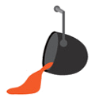

Propuestas Por Departamento
Sistemas

Electiva en seguridad informática
Proponer una electiva de IoT (Internet Of Things)
Gestionar apuntes alternativos para cátedras especificas de sistemas (guía de ejercicios resueltos para diseño, análisis de sistemas, ingeniería de software, apuntes teóricos)
Normalizacion de la Cátedra de comunicaciones
Posibilidad de recuperar parciales desaprobados/ausente en una fecha de examen cercana a la de dicho parcial
Indutrial

Impulsar la creación de un título intermedio para nuestra carrera
Promoción total de las materias del departamento de Ingeniería Industrial
Gestionar por la apertura de nuevas comisiones
Digitalización de las tesis aprobadas para consultas
Cursos y talleres sobre PNL, Energías Alternativas, Distribución de planta, Coaching, Oratoria, Gestión Empresarial, Gestión de proyectos
Electronica

Abrir Cursos de electrónica básica gratuitos
Cursos de Kikat - volcado a PBC
Proponer más prácticas para sistemas de comunicación
Gestionar cursos de sistemas embebidos
Quimica

Implementación de Una Visita Técnica obligatoria por año, instrumentada en las materias integradoras de la carrera
Proponer nuevas materias electivas, como por Ej: investigación, desarrollo de habilidades blandas como liderazgo, trabajo en equipos, administración y gestión empresarial, desarrollo de nuevas tecnologías y herramientas prácticas para diseño y cálculo de procesos industriales, calidad y mejora continua, gestión de tecnologías sustentables
Cursos de apoyo complementario a la cátedra de Mathcad
Creación de un espacio físico específico (lockers) destinado a dejar objetos personales en el laboratorio, que genere más orden y seguridad
Promover el Emprendedurismo, mediante la formulación de proyectos de real concreción. Articulado con UTN Emprende
Taller de técnicas de estudios
Electrica

Impulsar la creación de un título intermedio para nuestra carrera
Proponer y fomentar a las cátedras de Integración Eléctrica I y II a que incentiven al alumno a través de conocimientos básicos de electrotecnia y de instalaciones eléctricas simples
Proponer y fomentar a la cátedra de Sistemas de Representación una mayor dedicación al uso de AutoCAD
Proponer y fomentar a las cátedras de Integración Eléctrica I y II a que incentiven al alumno a través de conocimientos básicos de electrotecnia y de instalaciones eléctricas simples.
Mecanica

Impulsar la creación de un título intermedio para nuestra carrera
Impulsar la bolsa de trabajo (polo productivo)
Gestionar creación del Área de investigación vehicular
Inclusión de electivas sobre gestión (marketing, liderazgo, gestión empresarial, coaching, emprendedurismo)
Civil

Realizar visitas técnicas a obras a través de las cátedras
Actualización de autogestión en cuanto a los horarios reales de clases
Generar una bolsa de trabajo permanente para los estudiantes
Proponer Electivas de “Vías Ferroviarias y Sistemas de Información Geográfica”, y “Gestión Ingenieril”
Que se convoque para PPS a estudiantes de nuestra Regional en las obras que se realicen dentro de la misma
Gestionar la creación del laboratorio de estructuras
Metalurgica

Continuar realizando Viajes y Visitas durante el año
Reforzar la Biblioteca Digital
Gestionar el dictado de Materias Electivas, con una modalidad Semipresencial
Difundir la participación en Congresos y Gestionar la inscripción a los mismos